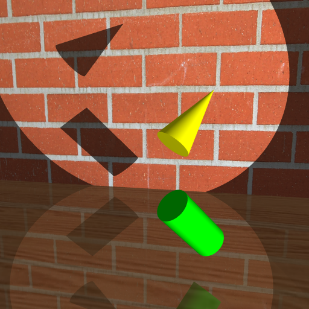
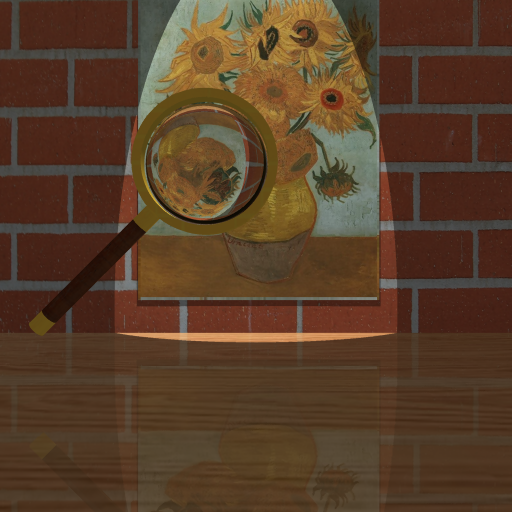

Primitives -- Cylinder, Cone
A cylinder and a cone
An hourglass
A glossy hourglass (np = 100)
CSG
Take the union, intersection and differece of a cube and a sphere.
Three gears. Each of them is a csg.
Three glossy gears (not submit this one).
Gear making process
Reflection
Two mirrors reflect each other with a green ball in the middle.
A mirror reflects Van Gogh's sunflowers which sits at the back of the room.
A mirror reflects part of an hourglass with adaptive anti-aliasing
Refraction
A magnifier refracts sunflowers (n = 1.00)
A magnifier refracts sunflowers (n = 1.02)
A magnifier refracts sunflowers (n = 1.05)
A magnifier refracts sunflowers (n = 1.50)
A magnifier refracts sunflowers (n = 2.00)
Texture
Texture mapping applies to three books, the map, the front part of the pen, and the body of the ink bottle.
Bump Mapping
Bump mapping applies to the Earth.
Light sits at the right.
Light sits at the left.
Motion Blur
Motion blur is applied on the stamp. In each time interval, make 40 steps and average the color. (distance=1, each step=0.025)
Soft Shadow
Sample 1 shadow ray in total
Sample 5 shadow rays in total
Sample 10 shadow rays in total
Sample 20 shadow rays in total
Adaptive Anti-aliasing
Use the idea of warnock's algorithm.
Recursion depth=1 (with red edge detection).
Recursion depth=2 (with red edge detection).
Recursion depth=2.

No anti-aliasing.
Final Scene
Glosy Reflection (Extra)
Glossy reflection with np = 10
/glossyref10.png)
Glossy reflection with np = 100
/glossyref100.png)
Glossy reflection with np = 1,000
/glossyref1000.png)
Glossy reflection with np = 10,000
/glossyref10000.png)
Glossy reflection with np = 1,000,000
/glossyref1000000.png)
A glossy hourglass
/glossyhg.png)
3 glossy gears
/glossycsg.png)
Glossy Refraction (Extra)
Glossy transmission (np = 100)
Glossy transmission (np = 10,000)
Transparent
Depth of Field (extra)
Depth = 34 (objz = -15, eyez = 20)
/doffar.png)
Depth = 24 (objz = -5, eyez = 20)
/dofmid.png)
Depth = 14 (objz = 5, eyez = 20)
/dofnear.png)
Animation
50fps animation
/anime.gif)
Multithreading
32 threads for lab computer.
8 threads for personal computer.
scene -- time using multitread vs time without using multithread
Glossy hourglass -- 13m46 vs 49m21 (improvment:3.58 times faster)
Glossy transmission -- 4m vs 14m52 (improvment:3.72 times faster)
Glossy reflection -- 6m36 vs 24m55 (improvment:3.78 times faster)
Animation/frame -- 49s2 vs 5m56 (improvment:7.26 times faster)
Animation/allframes -- 10m45 vs 83m31 (improvment:7.77 times faster)